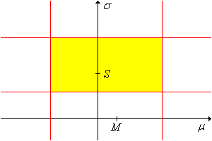
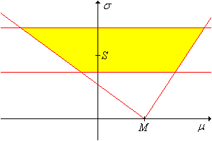

Distribusi normal mungkin merupakan distribusi terpenting dalam kajian statistika matematis, antara lain karena teorema limit pusat. Sebagai akibat teorema ini, suatu besaran terukur yang dipengaruhi oleh banyak galat acak kecil akan mempunyai distribusi yang setidaknya mendekati normal. Variabel semacam itu ada di mana-mana dalam eksperimen statistika, pada bidang yang membentang dari ilmu fisika dan biologi hingga ilmu sosial.
Karena itu, pada bagian ini kita mengasumsikan bahwa \(\bs{X} = (X_1, X_2, \ldots, X_n)\) adalah sampel acak berukuran sekurang-kurangnya 2 dari distribusi normal dengan rata-rata \(\mu\) dan simpangan baku \(\sigma\). Tujuan kita adalah membangun interval kepercayaan bagi \(\mu\) dan \(\sigma\) secara terpisah, lalu secara lebih umum membangun himpunan kepercayaan bagi \((\mu, \sigma)\). Ini termasuk kasus khusus terpenting dalam pendugaan himpunan. Bagian paralel mengenai pengujian pada model normal terdapat dalam Bab 8 tentang pengujian hipotesis. Pertama-tama kita perlu meninjau beberapa fakta dasar yang sangat penting bagi analisis kita.
Ingat bahwa rata-rata sampel \(M\) dan varians sampel \(S^2\) adalah \[ M = \frac{1}{n} \sum_{i=1}^n X_i, \quad S^2 = \frac{1}{n - 1} \sum_{i=1}^n (X_i - M)^2\]
Dari kajian pendugaan titik, ingat bahwa \(M\) merupakan penduga tak bias dan konsisten bagi \(\mu\), sedangkan \(S^2\) merupakan penduga tak bias dan konsisten bagi \(\sigma^2\). Dari statistik-statistik dasar ini kita dapat membangun variabel pivot yang akan digunakan untuk membangun dugaan interval. Ingat kembali sifat khusus distribusi normal berikut:
Definisikan \[ Z = \frac{M - \mu}{\sigma \big/ \sqrt{n}}, \quad T = \frac{M - \mu}{S \big/ \sqrt{n}}, \quad V = \frac{n - 1}{\sigma^2} S^2 \]
Dengan demikian, masing-masing variabel acak tersebut merupakan variabel pivot bagi \((\mu, \sigma)\): distribusinya tidak bergantung pada parameter, tetapi variabelnya sendiri secara fungsional bergantung pada salah satu atau kedua parameter. Variabel pivot \(Z\) dan \(T\) akan digunakan untuk membangun dugaan interval bagi \(\mu\), sedangkan \(V\) akan digunakan untuk membangun dugaan interval bagi \(\sigma^2\). Untuk membangun dugaan tersebut, kita memerlukan kuantil distribusi-distribusi baku ini. Kuantil dapat dihitung memakai aplikasi kuantil atau sebagian besar paket perangkat lunak matematika dan statistika. Notasi yang akan kita gunakan adalah sebagai berikut:
Misalkan \(p \in (0, 1)\) dan \(k \in \N_+\).
Karena distribusi normal standar dan distribusi \(t\) Student simetris terhadap 0, berlaku \(z(1 - p) = -z(p)\) dan \(t_k(1 - p) = -t_k(p)\) untuk \(p \in (0, 1)\) dan \(k \in \N_+\). Sebaliknya, distribusi khi-kuadrat tidak simetris.
Dalam pembahasan pertama, kita mengasumsikan bahwa rata-rata distribusi \(\mu\) tidak diketahui, tetapi simpangan baku \(\sigma\) diketahui. Asumsi ini tidak selalu artifisial. Sering ada keadaan ketika \(\sigma\) stabil sepanjang waktu sehingga setidaknya diketahui secara mendekati, sementara \(\mu\) berubah karena perlakuan
yang berbeda. Contohnya diberikan dalam latihan komputasi di bawah. Variabel pivot \(Z\) menghasilkan interval kepercayaan bagi \(\mu\).
Untuk \(\alpha \in (0, 1)\),
Karena \(Z = \frac{M - \mu}{\sigma / \sqrt{n}}\) mempunyai distribusi normal standar, menurut definisi kuantil masing-masing kejadian berikut berpeluang \(1 - \alpha\):
Dalam setiap kasus, menyelesaikan pertidaksamaan terhadap \(\mu\) memberikan hasil yang dinyatakan.
Inilah dugaan interval baku bagi \(\mu\) ketika \(\sigma\) diketahui. Interval kepercayaan dua sisi pada (a) simetris terhadap rata-rata sampel \(M\) dan, seperti ditunjukkan oleh bukti, bersesuaian dengan peluang yang sama sebesar \(\frac{\alpha}{2}\) pada setiap ekor distribusi variabel pivot \(Z\). Namun, ini bukan satu-satunya interval kepercayaan dua sisi bertingkat \(1 - \alpha\); peluang \(\alpha\) dapat dibagi antara ekor kiri dan kanan distribusi \(Z\) dengan cara apa pun.
Untuk setiap \(\alpha, \, p \in (0, 1)\), sebuah interval kepercayaan bertingkat \(1 - \alpha\) bagi \(\mu\) adalah \[ \left[M - z(1 - p \alpha) \frac{\sigma}{\sqrt{n}}, M - z(\alpha - p \alpha) \frac{\sigma}{\sqrt{n}} \right] \]
Dari distribusi normal \(M\) dan definisi fungsi kuantil, \[ \P \left[ z(\alpha - p \, \alpha) \lt \frac{M - \mu}{\sigma / \sqrt{n}} \lt z(1 - p \alpha) \right] = 1 - \alpha \] Hasilnya kemudian diperoleh dengan menyelesaikan pertidaksamaan terhadap \(\mu\).
Ditinjau dari distribusi variabel pivot \(Z\), seperti ditunjukkan oleh bukti, interval kepercayaan dua sisi di atas bersesuaian dengan \(p \alpha\) pada ekor kanan dan \((1 - p) \alpha\) pada ekor kiri. Selanjutnya, mari kita telaah panjang interval kepercayaan ini.
Untuk \(\alpha, \, p \in (0, 1)\), panjang (deterministik) interval kepercayaan dua sisi bertingkat \(1 - \alpha\) di atas adalah \[L = \frac{\left[z(1 - p \alpha) - z(\alpha - p \alpha)\right] \sigma}{\sqrt{n}} \]
Hasil terakhir kembali menunjukkan adanya kompromi antara tingkat kepercayaan dan panjang interval kepercayaan. Jika \(n\) dan \(p\) tetap, kita hanya dapat memperkecil \(L\)—dan dengan demikian memperketat dugaan—dengan mengorbankan tingkat kepercayaan. Sebaliknya, kita hanya dapat menaikkan tingkat kepercayaan dengan memperpanjang interval. Ditinjau dari \(p\), yang terbaik di antara interval kepercayaan dua sisi bertingkat \(1 - \alpha\)—dan yang hampir selalu digunakan—adalah interval simetris berekor sama dengan \(p = \frac{1}{2}\):
Gunakan eksperimen pendugaan rata-rata untuk menjelajahi prosedur ini. Pilih distribusi normal dan pivot normal. Gunakan berbagai nilai parameter, tingkat kepercayaan, ukuran sampel, dan jenis interval. Untuk setiap konfigurasi, jalankan eksperimen 1.000 kali. Ketika simulasi berjalan, perhatikan bahwa interval kepercayaan berhasil memuat rata-rata jika dan hanya jika nilai variabel pivot berada di antara kedua kuantil. Perhatikan ukuran dan letak interval kepercayaan, lalu bandingkan proporsi interval yang berhasil dengan tingkat kepercayaan teoretis.
Untuk interval kepercayaan baku, misalkan \(d\) menyatakan jarak antara rata-rata sampel \(M\) dan suatu titik ujung. Artinya, \[ d = z_\alpha \frac{\sigma}{\sqrt{n}} \] dengan \(z_\alpha = z(1 - \alpha /2 )\) untuk interval dua sisi dan \(z_\alpha = z(1 - \alpha)\) untuk interval kepercayaan atas atau bawah. Bilangan \(d\) adalah margin galat dugaan tersebut.
Perhatikan bahwa \(d\) deterministik dan panjang interval dua sisi baku adalah \(L = 2d\). Dalam banyak kasus, langkah pertama dalam perancangan eksperimen adalah menentukan ukuran sampel yang diperlukan untuk menduga \(\mu\) dengan margin galat dan tingkat kepercayaan tertentu.
Ukuran sampel yang diperlukan untuk menduga \(\mu\) dengan tingkat kepercayaan \(1 - \alpha\) dan margin galat \(d\) adalah \[ n = \left \lceil \frac{z_\alpha^2 \sigma^2}{d^2} \right\rceil \]
Hasil ini diperoleh dengan menyelesaikan definisi \(d\) di atas terhadap \(n\), lalu membulatkannya ke atas ke bilangan bulat berikutnya.
Perhatikan bahwa \(n\) berbanding lurus dengan \(z_\alpha^2\) dan \(\sigma^2\), serta berbanding terbalik dengan \(d^2\). Fakta terakhir ini menyiratkan hukum hasil yang semakin berkurang dalam mengecilkan margin galat. Misalnya, untuk mengecilkan suatu margin galat dengan faktor \(\frac{1}{2}\), kita harus memperbesar ukuran sampel dengan faktor 4.
Dalam pembahasan berikutnya, kita mengasumsikan bahwa rata-rata distribusi \(\mu\) dan simpangan baku \(\sigma\) tidak diketahui, sebagaimana lazimnya. Dalam hal ini, kita dapat menggunakan variabel pivot \(T\), bukan variabel pivot \(Z\), untuk membangun interval kepercayaan bagi \(\mu\).
Untuk \(\alpha \in (0, 1)\),
Karena \(T = \frac{M - \mu}{S / \sqrt{n}}\) mempunyai distribusi \(t\) Student dengan \(n - 1\) derajat kebebasan, menurut definisi kuantil masing-masing kejadian berikut berpeluang \(1 - \alpha\):
Dalam setiap kasus, menyelesaikan pertidaksamaan terhadap \(\mu\) memberikan hasil yang dinyatakan.
Inilah dugaan interval baku bagi \(\mu\) ketika \(\sigma\) tidak diketahui. Interval kepercayaan dua sisi pada (a) simetris terhadap rata-rata sampel \(M\) dan bersesuaian dengan peluang yang sama sebesar \(\frac{\alpha}{2}\) pada setiap ekor distribusi variabel pivot \(T\). Seperti sebelumnya, ini bukan satu-satunya interval kepercayaan; \(\alpha\) dapat dibagi antara ekor kiri dan kanan dengan cara apa pun.
Untuk setiap \(\alpha, \, p \in (0, 1)\), sebuah interval kepercayaan bertingkat \(1 - \alpha\) bagi \(\mu\) adalah \[ \left[M - t_{n-1}(1 - p \alpha) \frac{S}{\sqrt{n}}, M - t_{n-1}(\alpha - p \alpha) \frac{S}{\sqrt{n}} \right] \]
Karena \(T\) mempunyai distribusi \(t\) Student dengan \(n - 1\) derajat kebebasan, dari definisi kuantil diperoleh \[ \P \left[ t_{n-1}(\alpha - p \alpha) \lt \frac{M - \mu}{S \big/ \sqrt{n}} \lt t_{n-1}(1 - p \alpha) \right] = 1 - \alpha \] Hasilnya kemudian diperoleh dengan menyelesaikan pertidaksamaan terhadap \(\mu\).
Interval kepercayaan dua sisi di atas bersesuaian dengan \(p \alpha\) pada ekor kanan dan \((1 - p) \alpha\) pada ekor kiri distribusi variabel pivot \(T\). Selanjutnya, mari kita telaah panjang interval kepercayaan ini.
Untuk \(\alpha, \, p \in (0, 1)\), panjang (acak) interval kepercayaan dua sisi bertingkat \(1 - \alpha\) di atas adalah \[ L = \frac{t_{n-1}(1 - p \alpha) - t_{n-1}(\alpha - p \alpha)} {\sqrt{n}} S \]
Bagian (a) dan (b) mengikuti sifat fungsi kuantil Student \(t_{n-1}\). Bagian (c) dan (d) mengikuti fakta bahwa \(\frac{\sqrt{n - 1}}{\sigma} S\) mempunyai distribusi khi dengan \(n - 1\) derajat kebebasan.
Sekali lagi terdapat kompromi antara tingkat kepercayaan dan panjang interval kepercayaan. Jika \(n\) dan \(p\) tetap, kita hanya dapat memperkecil \(L\)—dan dengan demikian memperketat dugaan—dengan mengorbankan tingkat kepercayaan. Sebaliknya, kita hanya dapat menaikkan tingkat kepercayaan dengan memperpanjang interval. Ditinjau dari \(p\), yang terbaik di antara interval kepercayaan dua sisi bertingkat \(1 - \alpha\)—dan yang hampir selalu digunakan—adalah interval simetris berekor sama dengan \(p = \frac{1}{2}\). Terakhir, tidak tepat menganggap \(L\) sebagai fungsi aljabar dari \(S\), sebab \(S\) adalah statistik. Demikian pula, tidak tepat menganggap \(L\) sebagai fungsi aljabar dari \(n\), sebab mengubah \(n\) berarti mengambil data baru dan dengan demikian memperoleh nilai \(S\) yang baru.
Gunakan eksperimen pendugaan rata-rata untuk menjelajahi prosedur ini. Pilih distribusi normal dan pivot \(T\). Gunakan berbagai nilai parameter, tingkat kepercayaan, ukuran sampel, dan jenis interval. Untuk setiap konfigurasi, jalankan eksperimen 1.000 kali. Ketika simulasi berjalan, perhatikan bahwa interval kepercayaan berhasil memuat rata-rata jika dan hanya jika nilai variabel pivot berada di antara kedua kuantil. Perhatikan ukuran dan letak interval kepercayaan, lalu bandingkan proporsi interval yang berhasil dengan tingkat kepercayaan teoretis.
Selanjutnya kita akan membangun interval kepercayaan bagi \(\sigma^2\) menggunakan variabel pivot \(V\) yang diberikan dalam .
Untuk \(\alpha \in (0, 1)\),
Karena \(V = \frac{n - 1}{\sigma^2} S^2\) mempunyai distribusi khi-kuadrat dengan \(n - 1\) derajat kebebasan, menurut definisi kuantil masing-masing kejadian berikut berpeluang \(1 - \alpha\):
Dalam setiap kasus, menyelesaikan pertidaksamaan terhadap \(\sigma^2\) memberikan hasil yang dinyatakan.
Inilah dugaan interval baku bagi \(\sigma^2\). Interval dua sisi pada (a) adalah interval berekor sama, yang bersesuaian dengan peluang \(\alpha / 2\) pada setiap ekor distribusi variabel pivot \(V\). Namun, interval ini tidak simetris terhadap varians sampel \(S^2\). Sekali lagi, peluang \(\alpha\) dapat dibagi antara ekor kiri dan kanan distribusi \(V\) dengan cara apa pun.
Untuk setiap \(\alpha, \, p \in (0, 1)\), sebuah interval kepercayaan bertingkat \(1 - \alpha\) bagi \(\sigma^2\) adalah \[ \left[\frac{n - 1}{\chi^2_{n-1}(1 - p \alpha)} S^2, \frac{n - 1}{\chi^2_{n-1}(\alpha - p \alpha)} S^2\right]\]
Ditinjau dari distribusi variabel pivot \(V\), interval kepercayaan di atas bersesuaian dengan \(p \alpha\) pada ekor kanan dan \((1 - p) \alpha\) pada ekor kiri. Sekali lagi, mari kita telaah panjang interval kepercayaan dua sisi yang umum. Panjangnya acak, tetapi merupakan kelipatan varians sampel \(S^2\). Karena itu, kita dapat menghitung nilai harapan dan varians panjang tersebut.
Untuk \(\alpha, \, p \in (0, 1)\), panjang (acak) interval kepercayaan dua sisi pada teorema sebelumnya adalah \[ L = \left[\frac{1}{\chi^2_{n-1}(\alpha - p \alpha)} - \frac{1}{\chi^2_{n-1}(1 - p \alpha)}\right] (n - 1) S^2 \]
Untuk membangun interval kepercayaan dua sisi yang optimal, wajar untuk mencari \(p\) yang meminimalkan panjang harapan. Masalah ini rumit, tetapi untuk \(n\) besar interval berekor sama dengan \(p = \frac{1}{2}\) ternyata mendekati optimal. Tentu saja, mengambil akar kuadrat kedua titik ujung dari interval kepercayaan mana pun bagi \(\sigma^2\) menghasilkan interval kepercayaan bertingkat \(1 - \alpha\) bagi simpangan baku distribusi \(\sigma\).
Gunakan eksperimen pendugaan varians untuk menjelajahi prosedur ini. Pilih distribusi normal. Gunakan berbagai nilai parameter, tingkat kepercayaan, ukuran sampel, dan jenis interval. Untuk setiap konfigurasi, jalankan eksperimen 1.000 kali. Ketika simulasi berjalan, perhatikan bahwa interval kepercayaan berhasil memuat simpangan baku jika dan hanya jika nilai variabel pivot berada di antara kedua kuantil. Perhatikan ukuran dan letak interval kepercayaan, lalu bandingkan proporsi interval yang berhasil dengan tingkat kepercayaan teoretis.
Dalam pembahasan di atas, kita membangun interval kepercayaan bagi \(\mu\) dan \(\sigma\) secara terpisah (sekali lagi, biasanya kedua parameter tidak diketahui). Selanjutnya kita akan menelaah himpunan kepercayaan bagi titik parameter \((\mu, \sigma)\). Himpunan-himpunan ini merupakan himpunan bagian dari ruang parameter \(\R \times (0, \infty)\).
Setiap variabel pivot \(Z\), \(T\), dan \(V\) dapat digunakan untuk membangun himpunan kepercayaan bagi \((\mu, \sigma)\). Jika digunakan sendiri-sendiri, masing-masing menghasilkan himpunan kepercayaan tak terbatas; hal ini tidak mengejutkan karena satu variabel pivot digunakan untuk menduga dua parameter. Pertama, kita tinjau variabel pivot normal \(Z\).
Untuk setiap \(\alpha, \, p \in (0, 1)\), sebuah himpunan kepercayaan bertingkat \(1 - \alpha\) bagi \((\mu, \sigma)\) adalah
\[ Z_{\alpha,p} = \left\{ (\mu, \sigma): M - z(1 - p \alpha) \frac{\sigma}{\sqrt{n}} \lt \mu \lt M - z(\alpha - p \alpha) \frac{\sigma}{\sqrt{n}} \right\} \]
Himpunan kepercayaan ini berbentuk kerucut
dalam ruang parameter \((\mu, \sigma)\), dengan titik puncak \((M, 0)\) dan garis batas yang mempunyai kemiringan \(-\sqrt{n} \big/ z(1 - p \alpha)\) dan \(-\sqrt{n} \big/ z(\alpha - p \alpha)\) apabila penyebutnya tidak nol; jika suatu kuantil penyebut bernilai nol, batas yang bersesuaian adalah garis vertikal.
Dari distribusi normal \(M\) dan definisi fungsi kuantil, \[ \P \left[ z(\alpha - p \, \alpha) \lt \frac{M - \mu}{\sigma / \sqrt{n}} \lt z(1 - p \alpha) \right] = 1 - \alpha \] Hasilnya kemudian diperoleh dengan menyelesaikan pertidaksamaan terhadap \(\mu\).
Kerucut kepercayaan tersebut ditampilkan pada grafik di bawah. (Perhatikan bahwa kedua kemiringan dapat sama-sama negatif atau sama-sama positif.)
Variabel pivot \(T\) menghasilkan pernyataan berikut:
Untuk setiap \(\alpha, \, p \in (0, 1)\), sebuah himpunan kepercayaan bertingkat \(1 - \alpha\) bagi \((\mu, \sigma)\) adalah \[ T_{\alpha, p} = \left\{ (\mu, \sigma): M - t_{n-1}(1 - p \alpha) \frac{S}{\sqrt{n}} \lt \mu \lt M - t_{n-1}(\alpha - p \alpha) \frac{S}{\sqrt{n}} \right\}\]
Dari distribusi t Student bagi \(T\) dan definisi fungsi kuantil, \[ \P \left[ t_{n-1}(\alpha - p \alpha) \lt \frac{M - \mu}{S \big/ \sqrt{n}} \lt t_{n-1}(1 - p \alpha) \right] = 1 - \alpha \] Hasilnya kemudian diperoleh dengan menyelesaikan pertidaksamaan terhadap \(\mu\).

Berdasarkan konstruksinya, himpunan kepercayaan ini tidak memberikan informasi tentang \(\sigma\). Terakhir, variabel pivot \(V\) menghasilkan pernyataan berikut:
Untuk setiap \(\alpha, \, p \in (0, 1)\), sebuah himpunan kepercayaan bertingkat \(1 - \alpha\) bagi \((\mu, \sigma)\) adalah \[ V_{\alpha, p} = \left\{ (\mu, \sigma): \frac{(n - 1)S^2}{\chi_{n-1}^2(1 - p \alpha)} \lt \sigma^2 \lt \frac{(n - 1)S^2}{\chi_{n-1}^2(\alpha - p \alpha)} \right\} \]
Dari distribusi khi-kuadrat bagi \(V\) dan definisi fungsi kuantil, \[ \P \left[\chi_{n-1}^2(\alpha - p \, \alpha) \lt V \lt \chi_{n-1}^2(1 - p \alpha) \right] = 1 - \alpha \] Hasilnya kemudian diperoleh dengan menyelesaikan pertidaksamaan terhadap \(\sigma^2\).

Berdasarkan konstruksinya, himpunan kepercayaan ini tidak memberikan informasi tentang \(\mu\).
Sekarang kita dapat membentuk irisan beberapa himpunan kepercayaan di atas untuk memperoleh himpunan kepercayaan yang terbatas bagi \((\mu, \sigma)\). Kita akan menggunakan fakta bahwa rata-rata sampel \(M\) dan varians sampel \(S^2\) saling bebas, salah satu sifat khusus terpenting dari sampel normal. Kita juga memerlukan hasil dalam pendahuluan tentang irisan himpunan kepercayaan. Dalam teorema-teorema berikut, misalkan \(\alpha, \, \beta, \, p, \, q \in (0, 1)\) dengan \(\alpha + \beta \lt 1\).
Himpunan \(T_{\alpha, p} \cap V_{\beta, q}\) adalah himpunan kepercayaan konservatif bertingkat \(1 - (\alpha + \beta)\) bagi \((\mu, \sigma)\).

Himpunan \(Z_{\alpha, p} \cap V_{\beta, q}\) adalah himpunan kepercayaan bertingkat \((1 - \alpha)(1 - \beta)\) bagi \((\mu, \sigma)\).

Menarik untuk diperhatikan bahwa himpunan kepercayaan \(T_{\alpha, p} \cap V_{\beta, q}\) merupakan himpunan hasil kali sebagai himpunan bagian ruang parameter, tetapi bukan sebagai himpunan bagian ruang sampel. Sebaliknya, himpunan kepercayaan \(Z_{\alpha, p} \cap V_{\beta, q}\) bukan himpunan hasil kali dalam ruang parameter, tetapi merupakan himpunan hasil kali dalam ruang sampel.
Asumsi utama kita adalah bahwa distribusi asal sampel bersifat normal. Tentu saja, dalam masalah statistika nyata, kecil kemungkinan kita mengetahui banyak hal tentang distribusi asal sampel, apalagi mengetahui bahwa distribusi itu normal. Jika suatu prosedur statistika tetap bekerja cukup baik meskipun asumsi yang mendasarinya dilanggar, prosedur tersebut disebut robust (tahan terhadap pelanggaran asumsi). Dalam subbagian ini, kita akan menjelajahi robustitas prosedur pendugaan bagi \(\mu\) dan \(\sigma\).
Andaikan distribusi asal sampel sebenarnya tidak normal. Ketika ukuran sampel \(n\) relatif besar, distribusi rata-rata sampel masih mendekati normal menurut teorema limit pusat. Karena itu, dugaan interval bagi \(\mu\) mungkin masih berlaku secara mendekati.
Gunakan simulasi eksperimen pendugaan rata-rata untuk menjelajahi prosedur ini. Pilih distribusi gamma dan pivot Student. Gunakan berbagai nilai parameter, tingkat kepercayaan, ukuran sampel, dan jenis interval. Untuk setiap konfigurasi, jalankan eksperimen 1.000 kali. Perhatikan ukuran dan letak interval kepercayaan, lalu bandingkan proporsi interval yang berhasil dengan tingkat kepercayaan teoretis.
Dalam eksperimen pendugaan rata-rata, ulangi latihan sebelumnya dengan distribusi seragam.
Besarnya \(n\) yang diperlukan agar prosedur pendugaan interval bagi \(\mu\) bekerja dengan baik bergantung pada distribusi asal; semakin jauh distribusi tersebut menyimpang dari kenormalan, biasanya semakin besar \(n\) yang diperlukan. Konvergensi dalam teorema limit pusat dapat cepat pada banyak contoh yang lazim, sehingga ukuran sampel sekitar 30 atau lebih sering memadai dalam simulasi ini. Angka tersebut hanyalah aturan praktis, bukan jaminan universal; bentuk ekor, kemencengan, dan momen distribusi asal tetap menentukan mutu pendekatan.
Secara umum, prosedur interval khi-kuadrat eksak bagi \(\sigma\) tidak robust: di luar model normal, tidak ada hasil yang membuat distribusi pivot V tetap khi-kuadrat secara eksak.
Dalam eksperimen pendugaan varians, pilih distribusi gamma. Gunakan berbagai nilai parameter, tingkat kepercayaan, ukuran sampel, dan jenis interval. Untuk setiap konfigurasi, jalankan eksperimen 1.000 kali. Perhatikan ukuran dan letak interval kepercayaan, lalu bandingkan proporsi interval yang berhasil dengan tingkat kepercayaan teoretis.
Dalam eksperimen pendugaan varians, pilih distribusi seragam. Gunakan berbagai nilai parameter, tingkat kepercayaan, ukuran sampel, dan jenis interval. Untuk setiap konfigurasi, jalankan eksperimen 1.000 kali. Perhatikan ukuran dan letak interval kepercayaan, lalu bandingkan proporsi interval yang berhasil dengan tingkat kepercayaan teoretis.
Dalam latihan-latihan berikut, gunakan konstruksi berekor sama untuk interval kepercayaan dua sisi, kecuali jika dinyatakan lain.
Panjang suatu komponen hasil pemesinan seharusnya 10 sentimeter, tetapi akibat ketidaksempurnaan proses produksi, panjang sebenarnya merupakan variabel acak berdistribusi normal dengan rata-rata \(\mu\) dan varians \(\sigma^2\). Varians timbul dari faktor bawaan proses yang cukup stabil sepanjang waktu. Dari data historis diketahui bahwa \(\sigma = 0.3\). Sebaliknya, \(\mu\) dapat diatur dengan menyesuaikan berbagai parameter proses sehingga cukup sering berubah menjadi nilai tak diketahui. Sampel 100 komponen mempunyai rata-rata 10.2.
Andaikan berat sekantong keripik kentang (dalam gram) merupakan variabel acak berdistribusi normal dengan rata-rata \(\mu\) dan simpangan baku \(\sigma\), keduanya tidak diketahui. Sampel 75 kantong mempunyai rata-rata 250 dan simpangan baku 10.
Pada sebuah perusahaan pemasaran jarak jauh, durasi panggilan penawaran melalui telepon (dalam detik) merupakan variabel acak berdistribusi normal dengan rata-rata \(\mu\) dan simpangan baku \(\sigma\), keduanya tidak diketahui. Sampel 50 panggilan mempunyai durasi rata-rata 300 dan simpangan baku 60.
Di suatu perkebunan, berat buah persik (dalam ounce [oz]) pada saat panen merupakan variabel acak berdistribusi normal dengan simpangan baku 0.5. Berapa buah persik yang harus dijadikan sampel untuk menduga berat rata-rata dengan margin galat \(\pm 0.2\) dan tingkat kepercayaan 95%?
25
Upah per jam untuk jenis pekerjaan konstruksi tertentu merupakan variabel acak berdistribusi normal dengan simpangan baku $1.25 dan rata-rata tak diketahui \(\mu\). Berapa pekerja yang harus dijadikan sampel untuk membangun batas bawah kepercayaan 95% bagi \(\mu\) dengan margin galat $0.25?
68
Dalam data Michelson, asumsikan bahwa hasil pengukuran kecepatan cahaya mempunyai distribusi normal dengan rata-rata \(\mu\) dan simpangan baku \(\sigma\), keduanya tidak diketahui.
sebenarnyadari kecepatan cahaya berada dalam interval ini?
Dalam data Cavendish, asumsikan bahwa hasil pengukuran massa jenis Bumi mempunyai distribusi normal dengan rata-rata \(\mu\) dan simpangan baku \(\sigma\), keduanya tidak diketahui.
sebenarnyadari massa jenis Bumi berada dalam interval ini?
Dalam data Short, asumsikan bahwa hasil pengukuran paralaks Matahari mempunyai distribusi normal dengan rata-rata \(\mu\) dan simpangan baku \(\sigma\), keduanya tidak diketahui.
sebenarnyadari paralaks Matahari berada dalam interval ini?
Andaikan panjang mahkota bunga iris dari suatu spesies (Setosa, Virginica, atau Versicolor) berdistribusi normal. Gunakan data iris Fisher untuk membangun interval kepercayaan dua sisi 90% bagi setiap parameter berikut.